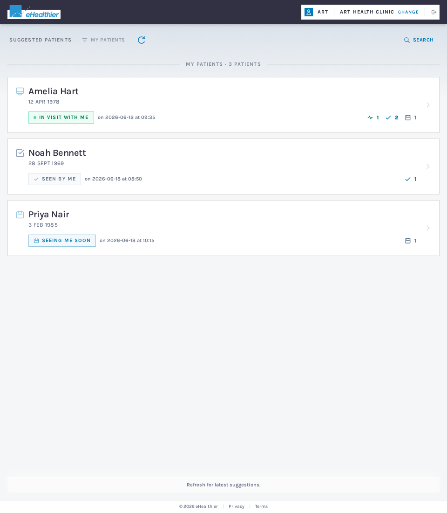
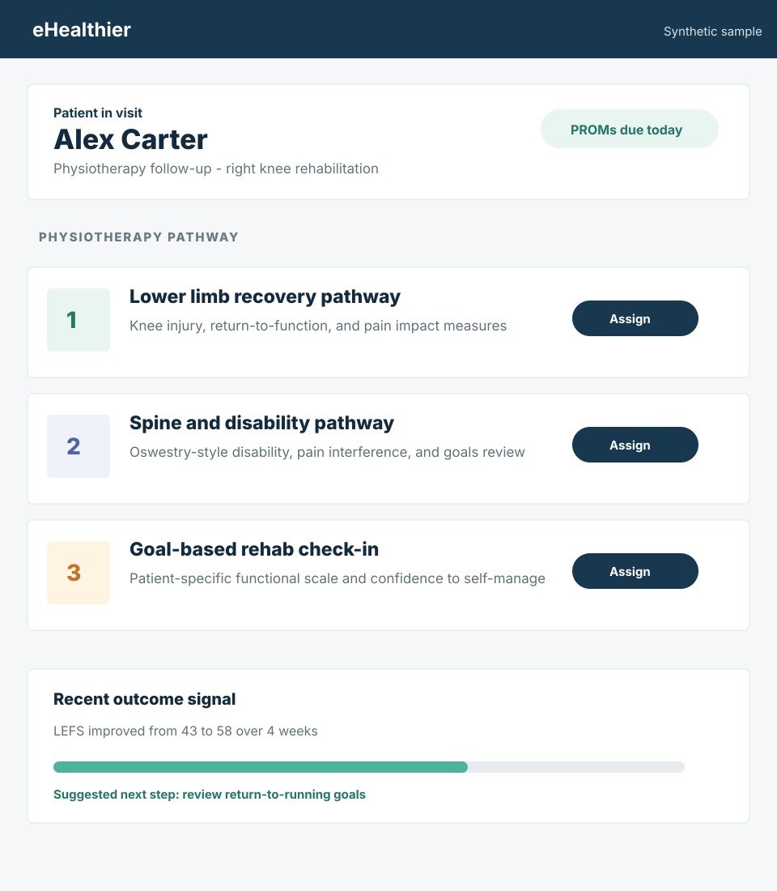

Deep general practice workflow
Patient context, PROM assignment, history, results, and record-ready documentation inside the clinical flow.
Outcomes at the point of care
eHealthier embeds PROM assignment, completion, interpretation, insights, and documentation into the practice workflows clinicians already use.
Natively integrated with


Native workflow
The workflow starts where care starts: with the patient record already open in the clinician's system. Through the integration, eHealthier surfaces the right patient, shows relevant PROM status, and supports assignment within the context of your clinical system, without a second system hunt.

eHealthier adapts the outcomes workflow to the systems each practice already uses, with Best Practice, Cliniko, and Nookal available at this stage.
Deep general practice workflow
Patient context, PROM assignment, history, results, and record-ready documentation inside the clinical flow.
Allied health outcomes
Outcome tracking designed around consult rhythm, patient programs, and progress conversations.
Practice-wide measurement
Consistent PROM workflows across teams who need measurement without extra administrative drag.
Use-case driven workflows
Different teams can surface the outcome workflows that match their care model, from social health pathways like loneliness through to lifestyle medicine programs, physiotherapy, podiatry, and other allied health use cases.




Actionable results
Results are presented with score bands, trend context, historical charts, risk stratification and prediction, recommended actions, patient responses, clinical prompts, and supporting knowledge base content, so the consult can move from measurement to action.
No portal hopping


Built for clinical trust
Workflow demo
See how eHealthier connects PROM workflows across Best Practice, Cliniko, and Nookal.